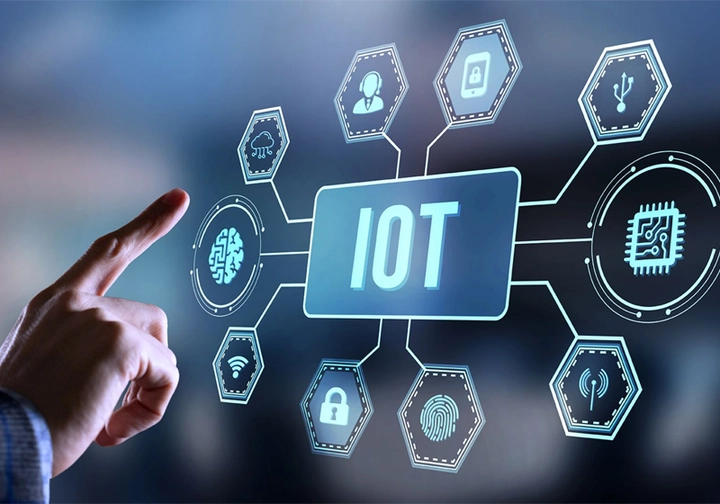
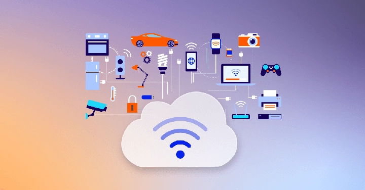
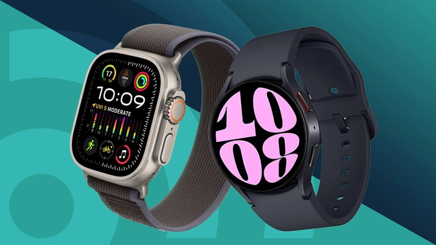
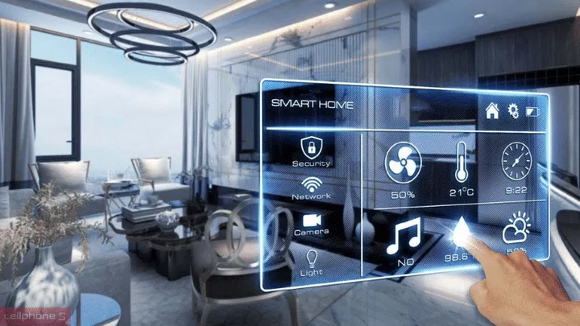

Internet vạn vật (IoT): Kết nối thế giới thông minh và định hình tương lai số
Tưởng chừng như việc các vật dụng có “ý thức” và có thể giao tiếp với nhau chỉ xuất hiện trong truyện cổ tích, nhưng ngày nay khi công nghệ phát triển, điều đó không còn là chuyện viễn vông mà đang dần trở thành hiện thực trong chính đời sống của chúng ta.
Trong vài năm trở lại đây, cụm từ “Internet vạn vật” (IoT – Internet of Things) xuất hiện ngày càng nhiều trên các phương tiện truyền thông và trong đời sống hằng ngày. Từ chiếc tủ lạnh có thể tự báo hết sữa, chiếc đồng hồ thông minh đo nhịp tim, đến hệ thống tưới cây tự động điều khiển qua điện thoại — tất cả đều là ví dụ điển hình của IoT.
Thực tế, IoT không chỉ là xu hướng công nghệ, mà đang trở thành một phần thiết yếu trong quá trình chuyển đổi số toàn cầu. Số lượng thiết bị được kết nối Internet ngày càng tăng với tốc độ chóng mặt tạo nên một mạng lưới khổng lồ nơi dữ liệu được thu thập và trao đổi liên tục.
Điều gì khiến IoT trở thành “chìa khóa” của kỷ nguyên số? Làm thế nào mà các thiết bị tưởng chừng vô tri lại có thể “giao tiếp” và “học hỏi” để phục vụ con người hiệu quả hơn?
Bài viết này TrithucWorld sẽ giúp bạn hiểu rõ IoT là gì, nguyên lý hoạt động, ứng dụng thực tế, cũng như những cơ hội và thách thức mà công nghệ này mang lại trong thời đại 4.0.

1. Giới thiệu chung về Internet vạn vật (IoT)
1.1. IoT là gì?
Internet vạn vật (IoT – Internet of Things) là thuật ngữ dùng để chỉ mạng lưới các thiết bị vật lý có khả năng kết nối Internet, cho phép chúng thu thập, chia sẻ và phản hồi thông tin với con người hoặc với các thiết bị khác.
Nói cách khác, IoT giúp “số hóa” thế giới vật lý, biến những vật dụng tưởng chừng đơn giản như bóng đèn, đồng hồ, camera hay cảm biến môi trường thành những thiết bị thông minh có thể giao tiếp và tự động hành động.
Điểm cốt lõi của IoT nằm ở khả năng kết nối và tự động hóa. Khi hàng triệu thiết bị cùng truyền dữ liệu về hệ thống trung tâm, các tổ chức và cá nhân có thể giám sát, phân tích và ra quyết định chính xác hơn trong thời gian thực — từ việc bật điều hòa trước khi về nhà, cho đến việc quản lý dây chuyền sản xuất trong nhà máy.
1.2. Hành trình hình thành và phát triển của IoT
Khái niệm kết nối thiết bị không phải là điều mới mẻ trong thế giới công nghệ. Những ý tưởng đầu tiên về việc cho máy móc “nói chuyện” với nhau đã xuất hiện từ cuối thập niên 1980, khi các kỹ sư thử nghiệm gửi dữ liệu từ máy bán hàng tự động về máy chủ qua mạng.
Tuy nhiên, thuật ngữ “Internet of Things” chỉ thực sự ra đời vào năm 1999, do Kevin Ashton – một nhà nghiên cứu thuộc Viện Công nghệ Massachusetts (MIT) – đề xuất, nhằm mô tả tầm nhìn về việc kết nối thế giới vật chất với Internet thông qua công nghệ nhận dạng (RFID).
Kể từ đó, cùng với sự phát triển vượt bậc của mạng Internet, điện toán đám mây, trí tuệ nhân tạo và cảm biến giá rẻ, IoT đã trở thành nền tảng quan trọng trong tiến trình chuyển đổi số toàn cầu. Ngày nay, không chỉ trong công nghiệp mà cả đời sống cá nhân, IoT đang hiện diện ở khắp nơi: ngôi nhà thông minh, xe hơi tự lái, nông trại kết nối và thành phố quản lý bằng dữ liệu – tất cả đều minh chứng cho một kỷ nguyên mới, nơi mọi vật đều có tiếng nói và khả năng kết nối.
2. Nguyên lý hoạt động của Internet vạn vật (IoT)
Đằng sau vẻ ngoài “thông minh” của các thiết bị IoT là một hệ thống hoạt động nhiều tầng gồm phần cứng, mạng kết nối và nền tảng xử lý dữ liệu. Dù ứng dụng trong lĩnh vực nào – từ nhà ở, y tế đến công nghiệp – thì nguyên tắc vận hành của IoT đều dựa trên bốn thành phần cốt lõi sau:

2.1. Thiết bị cảm biến (Sensors/Devices)
Đây là “đôi mắt” và “đôi tai” của hệ thống IoT. Các cảm biến có nhiệm vụ thu thập dữ liệu từ môi trường thực như nhiệt độ, độ ẩm, ánh sáng, nhịp tim, tốc độ chuyển động hoặc mức tiêu thụ điện năng.Những dữ liệu này được chuyển đổi thành dạng số để thiết bị có thể lưu trữ và truyền đi.
Ví dụ, một cảm biến trong nông trại có thể ghi nhận độ ẩm của đất, từ đó gửi thông tin về máy chủ để tự động kích hoạt hệ thống tưới nước khi cần thiết.
2.2. Kết nối mạng (Connectivity)
Sau khi thu thập dữ liệu, các thiết bị IoT cần một phương tiện truyền thông tin đến máy chủ hoặc hệ thống xử lý trung tâm. Tùy vào quy mô và mục đích sử dụng, việc kết nối có thể được thực hiện qua Wi-Fi, Bluetooth, 4G/5G, Zigbee, LoRaWAN hay thậm chí là mạng vệ tinh.
Độ ổn định, tốc độ và bảo mật của kết nối đóng vai trò then chốt, vì nó ảnh hưởng trực tiếp đến độ chính xác và độ trễ của toàn hệ thống.
2.3. Xử lý dữ liệu (Data Processing / Cloud & Edge Computing)
Dữ liệu sau khi được gửi đi sẽ được phân tích và xử lý. Điều này có thể diễn ra trên điện toán đám mây (Cloud) – nơi dữ liệu tập trung, dễ lưu trữ và khai thác, hoặc tại thiết bị biên (Edge Computing) – nơi thông tin được xử lý ngay gần nguồn phát sinh để tăng tốc độ phản hồi.
Ở giai đoạn này, hệ thống có thể sử dụng thuật toán, trí tuệ nhân tạo (AI) hoặc mô hình thống kê để phát hiện xu hướng, cảnh báo sự cố hoặc đưa ra quyết định tự động.
2.4. Giao diện người dùng (User Interface / Application Layer)
Kết quả xử lý sẽ được hiển thị qua ứng dụng, bảng điều khiển hoặc hệ thống giám sát để con người có thể quan sát và điều khiển.
Ví dụ, người dùng có thể xem dữ liệu thời gian thực trên điện thoại, bật/tắt thiết bị từ xa, hoặc nhận thông báo khi hệ thống phát hiện bất thường.

2.5. Quy trình hoạt động tổng quát
Toàn bộ quy trình IoT có thể tóm gọn trong chuỗi bốn bước:
Thu thập dữ liệu → Truyền dữ liệu → Phân tích dữ liệu → Hành động/Phản hồi.
Chính nhờ quy trình khép kín này mà các thiết bị trong hệ sinh thái IoT có thể “học hỏi” và thích ứng theo thời gian, tạo nên một môi trường vận hành thông minh, tự động và chính xác.
3. Ứng dụng của IoT trong đời sống và công nghiệp
Internet vạn vật (IoT) đang từng ngày len lỏi vào mọi lĩnh vực của đời sống, từ sinh hoạt cá nhân cho đến sản xuất quy mô lớn. Nhờ khả năng kết nối, thu thập và phân tích dữ liệu, IoT giúp tự động hóa quy trình, tối ưu năng suất và mang đến trải nghiệm tiện ích vượt trội cho con người. Dưới đây là những ứng dụng tiêu biểu của IoT trong thực tế.
3.1. Nhà thông minh (Smart Home)
IoT đã biến ngôi nhà truyền thống trở thành không gian sống thông minh và tiện nghi hơn bao giờ hết.
Các thiết bị như đèn, điều hòa, máy lọc không khí, camera an ninh hay loa thông minh đều có thể được kết nối và điều khiển qua điện thoại.
Chẳng hạn, bạn có thể bật máy lạnh trước khi về nhà, nhận cảnh báo khi cửa chưa khóa, hoặc ra lệnh bằng giọng nói để điều chỉnh ánh sáng.
Nhờ đó, cuộc sống trở nên tiện lợi, an toàn và tiết kiệm năng lượng hơn – điều mà trước đây chỉ thấy trong phim khoa học viễn tưởng.

3.2. Y tế và chăm sóc sức khỏe (Healthcare IoT)
Trong lĩnh vực y tế, IoT đang thay đổi cách theo dõi và điều trị bệnh nhân.
Các thiết bị đeo thông minh như đồng hồ đo nhịp tim, cảm biến huyết áp, thiết bị theo dõi giấc ngủ giúp bác sĩ và người dùng nhận biết tình trạng sức khỏe theo thời gian thực.
Tại bệnh viện, hệ thống IoT có thể giám sát máy móc, quản lý thuốc men và hỗ trợ chẩn đoán từ xa.
Ví dụ, bệnh nhân tim mạch có thể được theo dõi 24/7, và khi chỉ số bất thường, hệ thống sẽ tự động gửi cảnh báo đến bác sĩ — một bước tiến quan trọng trong chăm sóc sức khỏe cá nhân hóa.
3.3. Nông nghiệp thông minh (Smart Agriculture)
IoT đang giúp ngành nông nghiệp bước sang kỷ nguyên canh tác chính xác (precision farming).
Nhờ các cảm biến đo độ ẩm đất, nhiệt độ, ánh sáng và chất lượng không khí, nông dân có thể theo dõi tình trạng cây trồng và điều khiển hệ thống tưới tiêu, bón phân tự động.
Ví dụ, cảm biến độ ẩm sẽ kích hoạt tưới nước khi đất khô, giúp tiết kiệm tài nguyên và nâng cao năng suất.
Ở quy mô lớn hơn, dữ liệu được thu thập còn giúp dự báo mùa vụ, quản lý vật nuôi và phát hiện sớm dịch bệnh, góp phần hướng tới nông nghiệp bền vững.
3.4. Giao thông và logistics thông minh (Smart Transportation & Logistics)
Trong lĩnh vực giao thông, IoT giúp quản lý luồng di chuyển, giảm tắc đường và nâng cao an toàn.
Các cảm biến gắn trên đèn giao thông, camera, phương tiện và trạm thu phí có thể phân tích lưu lượng xe theo thời gian thực, từ đó điều chỉnh tín hiệu đèn hợp lý hoặc gợi ý tuyến đường tối ưu.
Trong logistics, thiết bị IoT giúp theo dõi hành trình, nhiệt độ, vị trí và tình trạng hàng hóa.
Ví dụ, các công ty vận tải lạnh có thể giám sát container chứa thực phẩm tươi sống trong suốt hành trình để đảm bảo chất lượng không bị ảnh hưởng.
3.5. Công nghiệp và sản xuất (Industrial IoT – IIoT)
IoT công nghiệp đang thúc đẩy cách mạng sản xuất 4.0, nơi mọi thiết bị, máy móc trong nhà máy được kết nối với nhau.
Hệ thống cảm biến và dữ liệu thời gian thực cho phép doanh nghiệp phát hiện lỗi sớm, bảo trì dự đoán (predictive maintenance) và tối ưu dây chuyền sản xuất.
Ví dụ, khi một động cơ có dấu hiệu hoạt động bất thường, cảm biến sẽ gửi cảnh báo trước khi sự cố xảy ra, giúp tiết kiệm chi phí và tránh ngừng sản xuất.
Không chỉ vậy, IIoT còn mở ra khả năng tự động hóa toàn diện và ra quyết định dựa trên dữ liệu (data-driven) – nền tảng của nhà máy thông minh.
3.6. Thành phố thông minh (Smart City)
Ở quy mô lớn hơn, IoT đang giúp nhiều quốc gia xây dựng thành phố thông minh (Smart City) – nơi mọi hoạt động đô thị đều được giám sát và điều phối bằng dữ liệu.
Từ chiếu sáng công cộng tự điều chỉnh, hệ thống thu gom rác tối ưu, đến giám sát chất lượng không khí và an ninh giao thông, IoT giúp nâng cao chất lượng sống, tiết kiệm năng lượng và giảm ô nhiễm.
Những ứng dụng này không chỉ mang lại tiện ích cho cư dân mà còn giúp chính quyền vận hành thành phố hiệu quả hơn.
Từ ngôi nhà nhỏ cho đến toàn bộ đô thị, Internet vạn vật đang thay đổi cách thế giới vận hành từng ngày.
Nhờ khả năng kết nối và phân tích dữ liệu, IoT không chỉ giúp con người sống thông minh hơn, mà còn tạo ra một hệ sinh thái công nghệ linh hoạt, tự học hỏi và thích nghi với nhu cầu thực tế của xã hội hiện đại.
4. Lợi ích và thách thức của Internet vạn vật (IoT)
Internet vạn vật mang đến nhiều lợi ích to lớn cho cả cá nhân lẫn doanh nghiệp. Nhờ khả năng kết nối và tự động hóa, IoT giúp tăng hiệu quả hoạt động, tiết kiệm chi phí vận hành, và nâng cao chất lượng cuộc sống. Trong sản xuất, cảm biến thông minh giúp doanh nghiệp giám sát dây chuyền theo thời gian thực, giảm hỏng hóc và tối ưu năng suất. Ở quy mô cá nhân, các thiết bị như đồng hồ thông minh hay hệ thống nhà thông minh mang đến sự tiện nghi và an toàn hơn trong sinh hoạt hàng ngày.
Tuy nhiên, đi cùng với cơ hội là không ít thách thức và rủi ro. IoT đối mặt với các vấn đề bảo mật và quyền riêng tư dữ liệu, khi hàng tỷ thiết bị cùng thu thập và chia sẻ thông tin. Ngoài ra, độ tin cậy của kết nối mạng, chi phí đầu tư ban đầu, và sự thiếu thống nhất trong tiêu chuẩn kỹ thuật cũng là rào cản khiến nhiều doanh nghiệp e dè. Để khai thác tối đa tiềm năng của IoT, cần có chiến lược triển khai an toàn, đồng bộ và hướng đến giá trị bền vững lâu dài.
5. Tương lai của Internet vạn vật (IoT)
Trong kỷ nguyên chuyển đổi số, Internet vạn vật (IoT) đang bước sang giai đoạn bứt phá mạnh mẽ hơn bao giờ hết, trở thành một trong những trụ cột quan trọng của nền kinh tế số toàn cầu. Sự kết hợp giữa IoT với trí tuệ nhân tạo (AI), dữ liệu lớn (Big Data) và mạng 5G đang mở ra kỷ nguyên mà các thiết bị không chỉ dừng lại ở việc “kết nối”, mà còn có khả năng phân tích, học hỏi hành vi của người dùng, dự đoán nhu cầu và tự động ra quyết định thông minh trong thời gian thực.
Những ứng dụng này đang hiện diện ở khắp nơi – từ các dây chuyền sản xuất tự động trong nhà máy, đến hệ thống giao thông thông minh hay những căn nhà tự động hóa tiết kiệm năng lượng.
Bên cạnh đó, Edge Computing – công nghệ xử lý dữ liệu ngay tại thiết bị thay vì gửi toàn bộ lên đám mây – đang dần trở thành xu hướng chủ đạo. Điều này không chỉ giúp giảm độ trễ, tăng tốc độ phản hồi và tối ưu chi phí hạ tầng, mà còn góp phần tăng cường bảo mật và quyền riêng tư cho người dùng.
Các tập đoàn công nghệ lớn trên thế giới đang đầu tư mạnh vào hạ tầng IoT và edge để tạo ra các hệ sinh thái “thông minh” khép kín, tối ưu hóa vận hành và ra quyết định dựa trên dữ liệu.
IoT cũng đang mở rộng mạnh mẽ trong công nghiệp (IIoT) và các đô thị thông minh (Smart City). Trong công nghiệp, IoT giúp giám sát máy móc theo thời gian thực, dự đoán hỏng hóc và tự động điều phối dây chuyền, góp phần nâng cao năng suất và giảm chi phí bảo trì. Trong đô thị, IoT hỗ trợ quản lý giao thông, chiếu sáng, xử lý rác thải và năng lượng một cách thông minh, tạo ra môi trường sống hiện đại, an toàn và bền vững hơn.
Đặc biệt, IoT xanh (Green IoT) đang được nhiều quốc gia hướng tới, tập trung vào năng lượng tái tạo, tiết kiệm tài nguyên và giảm phát thải carbon, góp phần vào mục tiêu chống biến đổi khí hậu toàn cầu.
Tuy nhiên, đi cùng cơ hội là những thách thức không nhỏ. Vấn đề an ninh mạng, quyền riêng tư dữ liệu và tính tương thích giữa các nền tảng thiết bị vẫn là rào cản lớn trong việc triển khai IoT trên quy mô rộng. Ngoài ra, chi phí đầu tư ban đầu, tiêu chuẩn hóa hệ thống và nguồn nhân lực chất lượng cao cũng là những yếu tố cần được quan tâm.
Trong tương lai, để IoT phát triển bền vững và mang lại lợi ích thật sự cho xã hội, các quốc gia và doanh nghiệp cần xây dựng chiến lược phát triển IoT an toàn, hiệu quả và có trách nhiệm, trong đó con người vẫn là trung tâm của mọi đổi mới công nghệ. IoT không chỉ là công cụ của thời đại số, mà còn là nền tảng cho một thế giới thông minh, kết nối và hướng đến sự phát triển bền vững.